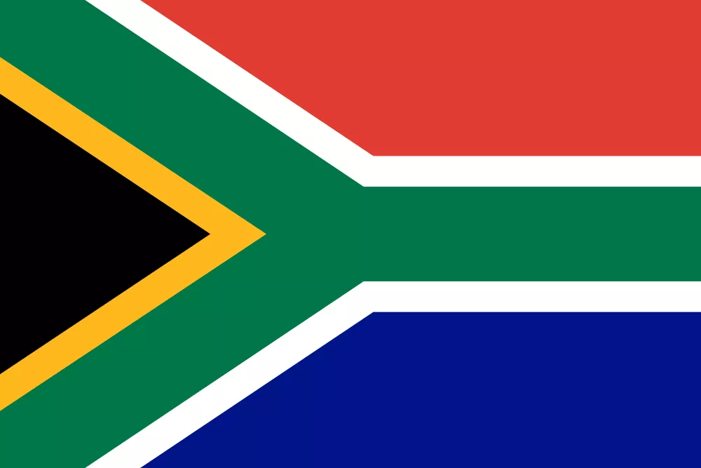

Jp Lawrence
About Me
Hello! My name is Jp Lawrence. I was born in Cape Town, South Africa. I am currently a student. I have worked at a startup previously doing graphic design and frontend development. My hobbies include playing piano, cycling, working out and designing stuff!


South Africa is a country on the southernmost tip of the African continent, marked by several distinct ecosystems. Inland safari destination Kruger National Park is populated by big game. The Western Cape offers beaches, lush winelands around Stellenbosch and Paarl, craggy cliffs at the Cape of Good Hope, forest and lagoons along the Garden Route, and the city of Cape Town, beneath flat-topped Table Mountain.